On Defining an Identity
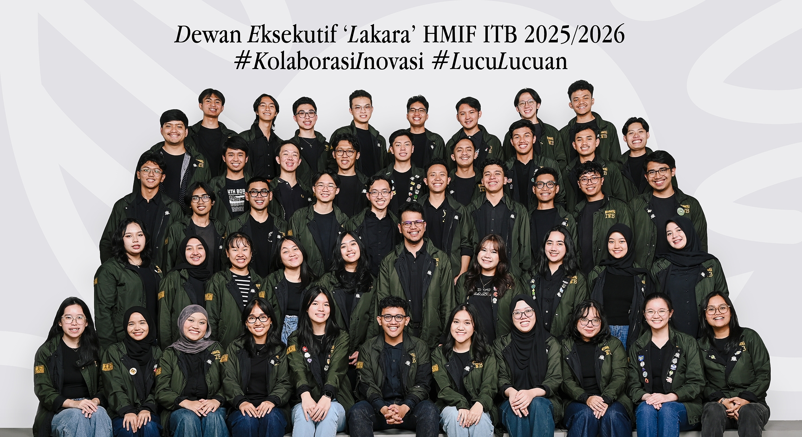
Introduction
Himpunan Mahasiswa Informatika (HMIF) is ITB’s largest student organization that encompasses two majors: Informatics Engineering and Information Systems & Technology. Each year, a new cabinet was formed by the elected chairperson. For the HMIF “Lakara” 2025/2026 term, I was appointed to lead the Visual & Design Division–responsible for designing and developing the organization’s visual identity.
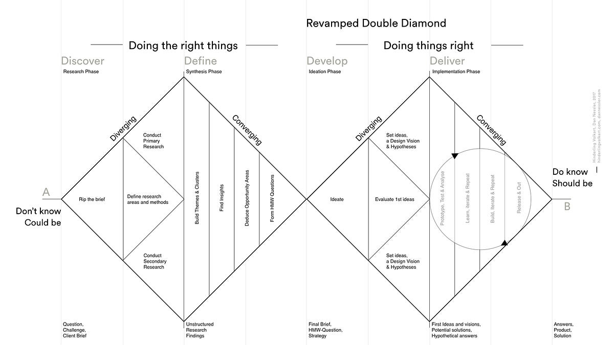
In retrospect, our workflow naturally aligned with the Double Diamond Framework—alternating between expanding research and focusing implementation. We applied this dual-phase structure twice: first to concept and craft the cabinet’s logo, and subsequently to build out the full design system.
Cabinet Logo
Discover
We started the process by asking a literal question: What does Lakara actually mean?
According to Kamus Besar Bahasa Indonesia, lakara means perahu kecil—a small boat.
From there, armed with the core vision defined by our chairperson, we aligned the literal meaning with the cabinet’s overarching purpose.
HMIF Lakara's vision is to strive as a vessel for student's collaboration, while navigating the
ocean of
innovation
to drive collective technological advancement and facing the waves of change.
To translate these abstract concepts into concrete visual ideas, we curated a moodboard—benchmarking logo styles, form languages, and visual tones we wanted to explore in our logo.
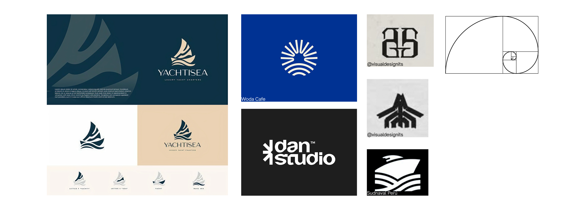
Define
Narrowing down our direction, we dissected the concepts word-by-word and settled on the ones that truly reflected the cabinet:
Perahu Kolaborasi
(boat as a vessel for collaboration)
Samudra Inovasi
(ocean of innovation)
Gelombang Perubahan
(waves of change)
With our pillars established, we locked in our visual approach that best fit our vision: a Minimalist Geometric Logomark.
Develop
With the concepts defined, our pens were out and we started sketching.
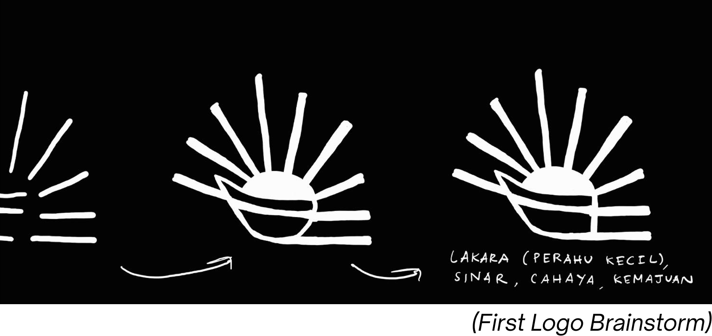
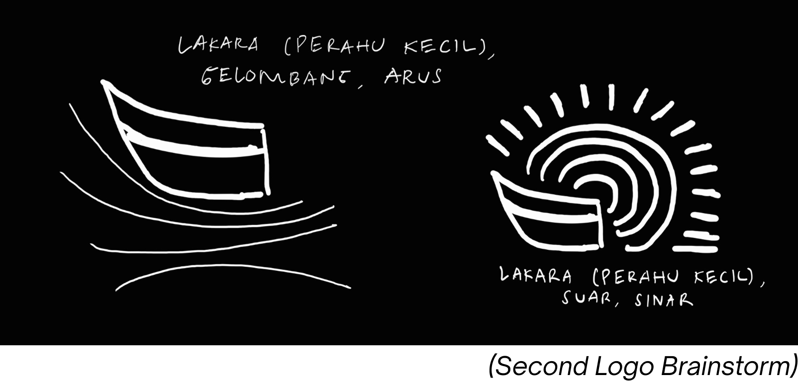
We circled back with each iteration of the sketches—pulled out more references and design principals—until we (and the stakeholders) were satisfied.
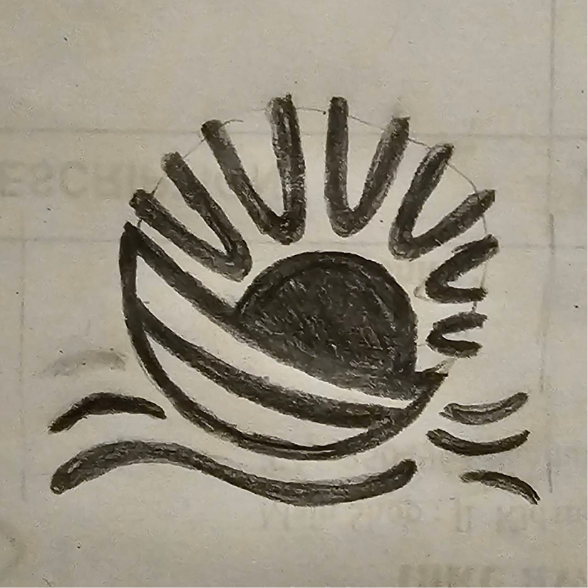
The final product intuitively integrated key Gestalt principles: Closure to form the sun silhouette, alongside Continuity and Similarity that create a visual harmony.
Deliver
We brought our final sketch into Adobe Illustrator and Figma for vectorization and precise geometry refinement. Then finally, we had the final product.
Lakara—defined in the KBBI as a small boat—is symbolized by a boat leaning forward, representing HMIF’s spirit to move forward together in the face of technological advancement.
Navigating the ocean of innovation and cutting through the waves of change, Lakara embodies an HMIF that stands resilient in the face of the relentless challenges of the times.
Behind the boat, the sun shines brightly—symbolizing the spirit of innovation. Each of its rays represents an idea that grows, moves, and creates a tangible impact for HMIF as it navigates change.
With its new identity, HMIF Lakara marks a new step for HMIF toward becoming increasingly collaborative, adaptive, and innovative.
Design System
Discover
With the logo set, it felt like we were already halfway through. The design system naturally needed to harmonize with the logo, and since the mark was bold, we aimed to build a visual identity that felt just as strong.
First, we analyzed and reflected on HMIF’s past brandings. We gravitated toward the large typography and photograph-driven layouts from previous terms.
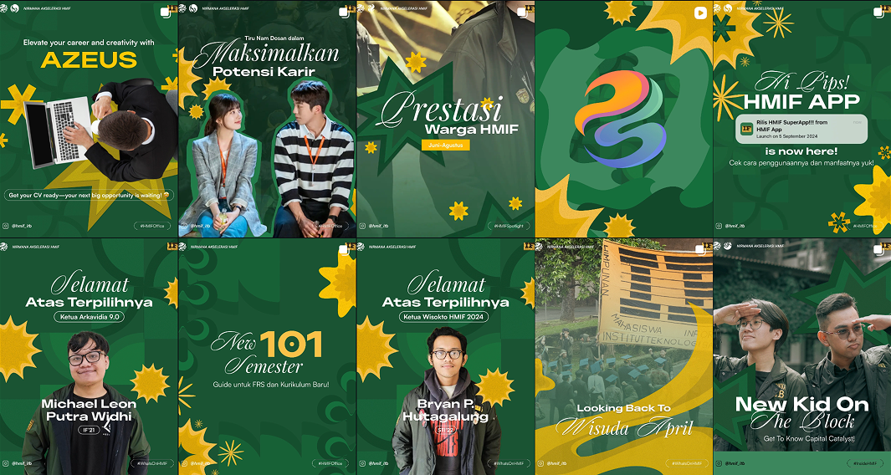
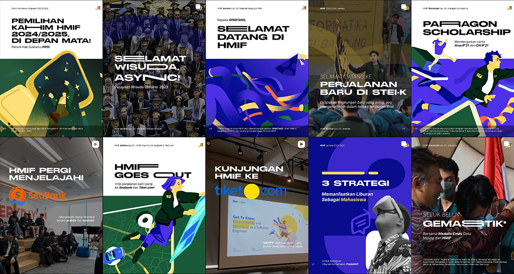
We also benchmarked against other student organizations' brands to identify key patterns and creative opportunities. Subconsciously, we looked into references that aligned with the vision we already had in mind.

Define
We converged our ideas and defined the primary design themes that would drive HMIF Lakara’s social media visual system:
Semi-realistic / Mixed Media — Blending 3D assets and textures to create visual depth and modern appeal.
Editorial Design — Focusing on photographs and subject matter, structured typography, and narrative-driven layouts.
Swiss Design — Emphasizing clean grid system, high contrast, but still minimalist.
UX-Driven Graphic Design — Implementing UX principles to prioritize visual hierarchy, ensuring complex information is accessible and easily digestible.
To bring those themes and visions to life, our design team needed to be armed with the essentials for brand consistency: a unified design system. At a minimum, we structured our system to include: logo usage, typography & variations, color palette, assets & components, textures, and template guidelines.
Develop
Core Graphic Asset: The Wave Element
A key development in our visual language was creating the primary identity asset: the Wave Element. We sketched and built placeholder templates early on to test how these forms harmonized with typography and layouts.
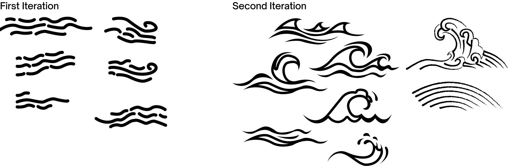
Deliver
Color Palette
Benchmarking from HMIF’s colors in the last cabinet, we selected a warm-leaning palette built around HMIF’s primary colors—golden yellow and mossy green—complemented by vibrant blue as a secondary accent, alongside essential neutrals (black and white). We chose high-contrast, warm tones to ensure the branding felt high-energy yet grounded.
Typography & Variations
Leaning into our Editorial and UX-driven design themes, we paired a serif typeface for our headers with a sans-serif for body copy. We established structured typographic variations to balance visual character with readability across diverse media formats.
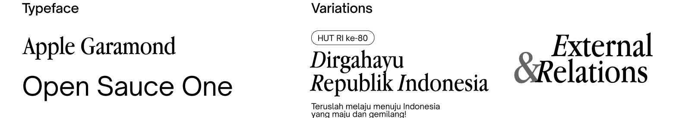
Assets, Components, & Template Guidelines
Rather than composing a rigid component library upfront, we deliberately kept our initial system lean. We designed a flexible foundation, knowing the asset library would scale organically as new projects and requests appeared throughout the term.
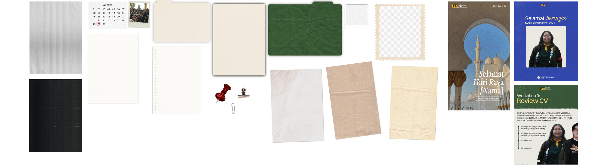
Takeaways
If asked what I would change about the process of defining HMIF Lakara’s identity, my answer would be: nothing. Not because I deemed that our design was perfect, but because every step was an essential learning curve for both our division and my personal growth as a designer. At its core, a design system is never truly finished; both the framework and the visual identity continue to evolve as incoming staff take the reins and execute new cabinet projects.
This work wouldn't have been possible without the vision of my deputy head and the dedication of our entire team. HMIF Lakara remains a project I look back on with immense pride and gratitude.
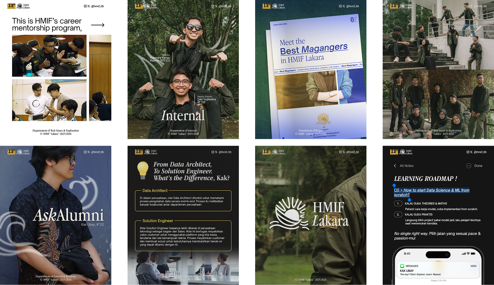